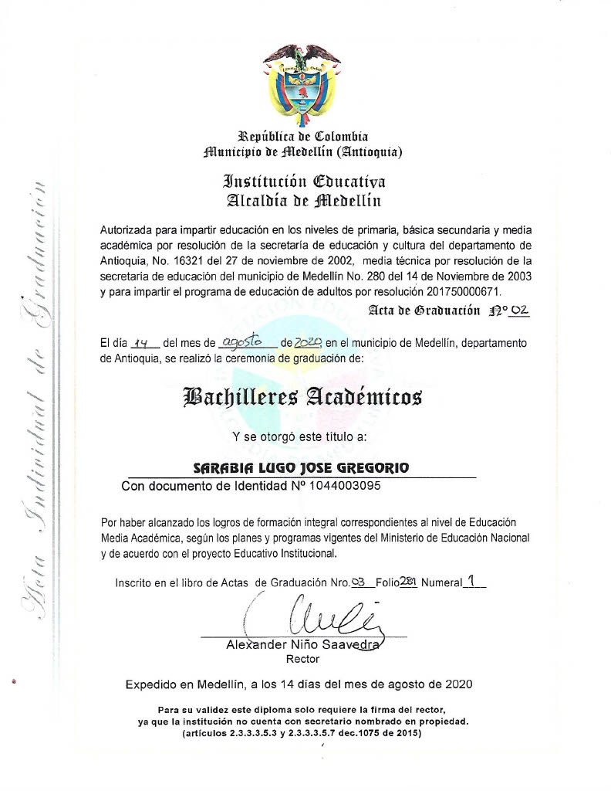

skills


bachillerato terminado en la Institución Educativa Alcaldia de Medellin...
actualmente estudio en la corporación universitaria de Medellin y voy en el segundo semestre de Ingenieria de Sistemas
yo no he tenido ningun tipo de trabajo de desarrollador ni nada que se le parezca, mis trabajos basicamente han sido de ayudante de cocinero en 2 restaurantes (friday y la Taberna de felix), he trabajado de construcción.
mis hobbis son trabajar y encerrarme en mi cuarto y postrarme frente al computador y aprender, esos son mis hobbis, no solo me conformo con lo que me enseñan en la universidad, siempre trato de estar un poco mas avanzado al momento de ver clases no siempre estuve interesado en este mundo del desarrollo web ni nada de computadores, pero me di cuenta de que ya el mundo gira entorno a las tecnologias del desarrollo, este es el futuro y yo quiero aprender para enfrentarme al futuro con sabiduria...